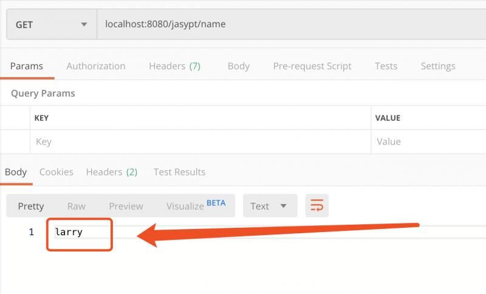

原文连接:https://www.cnblogs.com/larrydpk/p/12037857.html
1 简介
在上一篇文章中，介绍了Jasypt及其用法，具体细节可以查看【Java库】如何使用优秀的加密库Jasypt来保护你的敏感信息？。如此利器，用之得当，那将事半功倍。本文将介绍Springboot整合Jasypt，实现配置信息的安全，如数据库连接、账号和密码、接口凭证信息等。
Jasypt可以为Springboot加密的信息很多，主要有：
- System Property 系统变量
- Envirnment Property 环境变量
- Command Line argument 命令行参数
- Application.properties 应用配置文件
- Yaml properties 应用配置文件
- other custom property sources 其它配置文件
经测试，Springboot 2.1.9版本与jasypt-spring-boot最新版本的3.0.0和2.1.2均有问题，本文使用2.1.1成功。
2 如何加入依赖
Jasypt整合到Springboot是另一个开源项目jasypt-spring-boot，主要有三种整合方式：
2.1 jasypt-spring-boot-starter
如果项目使用@SpringBootApplication或@EnableAutoConfiguration注解，在pom中加入以下依赖即可对整个Spring的环境的配置信息进行加密解密。
<dependency>
<groupId>com.github.ulisesbocchio</groupId>
<artifactId>jasypt-spring-boot-starter</artifactId>
<version>2.1.1</version>
</dependency>2.2 jasypt-spring-boot
如果项目不使用@SpringBootApplication或@EnableAutoConfiguration注解，我们就使用下面的依赖，然后在配置Java类中加上注解@EnableEncryptableProperties。
<dependency>
<groupId>com.github.ulisesbocchio</groupId>
<artifactId>jasypt-spring-boot</artifactId>
<version>2.1.1</version>
</dependency>配置类如下：
@Configuration
@EnableEncryptableProperties
public class MyApplication {
}2.3 只对特定配置加密解密
如果不想使用以上两种方式对所有配置信息都进行加密解密的话，可以使用注解@EncryptablePropertySource指定配置文件，依赖如下：
<dependency>
<groupId>com.github.ulisesbocchio</groupId>
<artifactId>jasypt-spring-boot</artifactId>
<version>2.1.1</version>
</dependency>配置类如下：
@Configuration
@EncryptablePropertySource(name = "EncryptedProperties", value = "classpath:encrypted.properties")
public class MyApplication {
}3 生成加密字符
生成加密字符有多种方式，在实践中使用过以下几种方式。
3.1 Java命令行
Jasypt提供了一个类专门用于加密解密，提供了main方法，调用如下：
java -cp ./jasypt-1.9.3.jar org.jasypt.intf.cli.JasyptPBEStringEncryptionCLI password=pkslow algorithm=PBEWithMD5AndTripleDES input=larry输出为：
----ENVIRONMENT-----------------
Runtime: Oracle Corporation Java HotSpot(TM) 64-Bit Server VM 25.212-b10
----ARGUMENTS-------------------
input: larry
algorithm: PBEWithMD5AndTripleDES
password: pkslow
----OUTPUT----------------------
SUfiOs8MvmAUjg+oWl/6dQ==3.2 脚本命令
Jasypt为我们提供了脚本，可以直接用于加密解密，从http://www.jasypt.org/download.html可以下载。下载解压后的文件有：
# 解压后文件
LICENSE.txt NOTICE.txt README.txt apidocs bin lib
# bin文件夹的文件
decrypt.bat decrypt.sh
digest.bat digest.sh
encrypt.bat encrypt.sh
listAlgorithms.bat listAlgorithms.sh在bin目录下面，我们可以根据自己的系统选择使用什么脚本来生成密文，使用参数与Java命令一样。其实这些脚本就是封装了一个调用Java类的工具。使用如下：
$ sh encrypt.sh password=pkslow algorithm=PBEWithMD5AndTripleDES input=larry
----ENVIRONMENT-----------------
Runtime: Oracle Corporation Java HotSpot(TM) 64-Bit Server VM 25.212-b10
----ARGUMENTS-------------------
input: larry
algorithm: PBEWithMD5AndTripleDES
password: pkslow
----OUTPUT----------------------
xRvdeEnk7zgKtX5uVGCIug==3.3 Java代码
既然是Java的库，那肯定能用Java代码来加密解密了。具体细节可以参考【Java库】如何使用优秀的加密库Jasypt来保护你的敏感信息？。
4 配置密文与其它项
4.1 配置密文
生成密文后，就要把密文配置在相应的位置，如下：
username: ENC(SUfiOs8MvmAUjg+oWl/6dQ==)
jasypt:
encryptor:
password: pkslow
algorithm: PBEWithMD5AndTripleDES配置密文的默认格式：ENC(密文)，这个格式可以通过jasypt.encryptor.property.prefix和jasypt.encryptor.property.suffix配置，这里不再演示。
4.2 其它配置项
配置信息只有 jasypt.encryptor.password 是必须的，配置项有：
| 配置项 | 必须 | Default Value |
|---|---|---|
| jasypt.encryptor.password | True | - |
| jasypt.encryptor.algorithm | False | PBEWITHHMACSHA512ANDAES_256 |
| jasypt.encryptor.keyObtentionIterations | False | 1000 |
| jasypt.encryptor.poolSize | False | 1 |
| jasypt.encryptor.providerName | False | SunJCE |
| jasypt.encryptor.providerClassName | False | null |
| jasypt.encryptor.saltGeneratorClassname | False | org.jasypt.salt.RandomSaltGenerator |
| jasypt.encryptor.ivGeneratorClassname | False | org.jasypt.iv.RandomIvGenerator |
| jasypt.encryptor.stringOutputType | False | base64 |
| jasypt.encryptor.proxyPropertySources | False | false |
5 如何安放你的密钥
密钥是非常重要的信息，放在什么地方，决定着你的密文是否真的安全。可以有以下几类方式：
（1）放在application.properties
这样能获得配置文件的人就能知道密钥，不够安全。但它是一种方便简单的方式。存在密文和密钥放在同一个配置文件的风险。
（2）JVM参数
在启动Java程序时加参数：-Djasypt.encryptor.password=pkslow，这样就不会把密钥放在代码中去了。
（3）服务器的环境变量
把密钥放在linux系统的环境变量中去，只有能拿到服务器访问权限的人，才有可能知道密钥在哪。例如：
# 配置profile文件
export JASYPT_PASSWORD = pkslow
# 生效
source /etc/profile
# 运行java程序时
java -jar -Djasypt.encryptor.password=${JASYPT_PASSWORD} xxx.jar（4）使用自定义的Encryptor来存放
以上我们都使用了官方提供的Encryptor，其实我们是可以自定义的，如下：
@Bean("jasyptStringEncryptor")
public StringEncryptor stringEncryptor() {
PooledPBEStringEncryptor encryptor = new PooledPBEStringEncryptor();
SimpleStringPBEConfig config = new SimpleStringPBEConfig();
config.setPassword("password");
config.setAlgorithm("PBEWITHHMACSHA512ANDAES_256");
config.setKeyObtentionIterations("1000");
config.setPoolSize("1");
config.setProviderName("SunJCE");
config.setSaltGeneratorClassName("org.jasypt.salt.RandomSaltGenerator");
config.setIvGeneratorClassName("org.jasypt.iv.RandomIvGenerator");
config.setStringOutputType("base64");
encryptor.setConfig(config);
return encryptor;
}把密钥写在代码里，只有能获得jar包并反编译的人，才能获得密文。
如果我们把密钥的一部分写在代码里，另一部分通过外部方式来配置，这样就会更加安全。
6 结果测试
我们已经完成了密文的生成，现在我们测试一下是否能正常解密，测试代码如下：
@RestController
@RequestMapping("/jasypt")
public class JasyptController {
@Value("${username}")
private String username;
@GetMapping("/name")
public Mono<String> sendNormalText() {
return Mono.just(username);
}
}访问该接口，能返回加密前的字符串，整个流程测试成功：

7 总结
本文简介了Springboot整合Jasypt实现配置信息的安全化，在实际项目中应用还是很多的。
另外，如果项目中是采用Spring Cloud Config的，它提供了统一的加解密方式，也方便使用。但如果应用配置没有走配置中心，还是应该使用Jasypt。
欢迎关注公众号<南瓜慢说>，将持续为你更新...

欢迎加博主微信，做一个点赞之友，哈哈...
多读书，多分享；多写作，多整理。